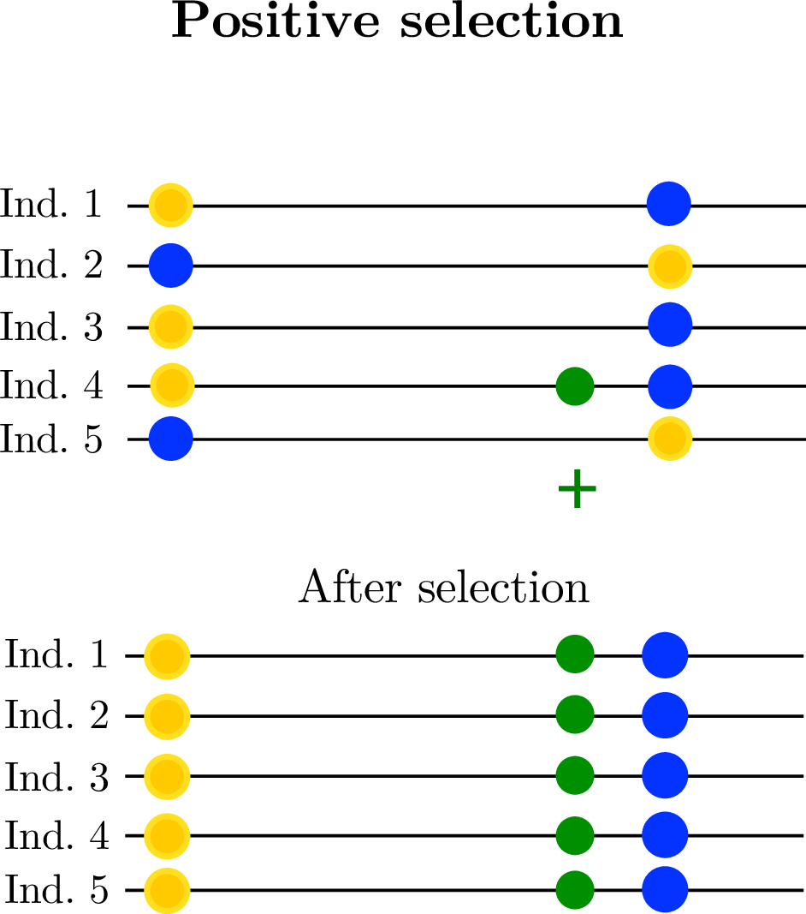

Landscapes in population genetics
ecology, evolution, and simulation
Moscow, ID // March 2019
the Mojave Desert Tortoise
Gopherus agassizii:

the Mojave Desert Tortoise

the Mojave Desert Tortoise

the Mojave Desert Tortoise

The question(s)
How will changes to the landscape affect population viability and gene flow?
How do tortoises move around on the landscape?

\[ \begin{aligned} \pi &= \text{ (within-pop diversity) } \\ d_{xy} &= \text{ (between-pop divergence) } \\ F_{ST} &= \text{ (relative differentiation) } \end{aligned} \]

Diversity correlates with recombination rate

Corbett-Detig et al 2015; Cutter & Payseur 2013

Corbett-Detig et al 2015
- linked selection
The indirect effects of selection on genomic locations that are linked to the sites under selection by a lack of recombination.
 
History is a sequence of trees
For a set of sampled chromosomes, at each position along the genome there is a genealogical tree that says how they are related.

Simulated file sizes

from Kelleher et al 2018, Inferring the ancestry of everyone"*
Example: three samples; two trees; two variant sites


Tree recording strategy
Every time an individual is born, we must:
- add each contributing gamete to the Node Table,
- add entries to the Edge Table recording which parental copy each inherited each bit of genome from, and
- add any new non-neutral mutations to the Mutation Table and (if necessary) their locations to the Site Table.

This produces waaaaay too much data.
An example: simplify these to J and K


Wright-Fisher, N=10: before simplification

… and after simplification


We still need simulations with:
- many loci under selection
- geographic population structure
- large populations with long genomes
for long enough to reach equilibrium (\(\sim 10N\) generations).
SLiM v3.1 (Haller and Messer)
Selection on Linked Mutations, v3.1: a forwards-time, individual-based, explicitly genomic simulator, now with:
- continuous space
- geographic maps
- locally, density-dependent demography (non-Wright-Fisher)

And a GUI!!!
… and, tree sequence recording!

A related pain
Coalescent theory requires exchangeability in large populations, because:
- Lineages must move independently until the coalesce, and
- if we know one offspring came from a certain location,
- that location may be more likely to be the source of others.

We need forward simulation for realistic geography.


Interactions
Based on interaction kernels, e.g. \[ \rho(r) = \frac{1}{2 \pi \sigma^2} e^{- r^2 / 2 \sigma^2} \]
applied to the distance to the other individual.

Interactions
Based on interaction kernels, e.g. \[ \rho(r) = \frac{1}{2 \pi \sigma^2} e^{- r^2 / 2 \sigma^2} \]
applied to the distance to the other individual.

Mate choice:
individual \(i\) chooses partner \(j\) at distance \(d_{ij}\) with probability proportional to \(\rho(d_{ij})\).

Dispersal:
offspring live near their parents.

Population regulation:
with local density \[ D_i = \sum_j \rho(d_{ij}) , \]
- survival,
- fecundity, and/or
- establishment
decrease with \(D\).


CJ Battey

Andy Kern
GWAS false positives

\(\sigma_d = \sigma_i = \sigma_m = 2\)


\(\sigma_d = 0.15\), \(\sigma_i = \sigma_m = 0.5\)

\(\sigma_d = 0.25\), \(\sigma_i = \sigma_m = 0.2\)

The Mimulus aurantiacus species complex


The data

Simulations
- \(N=10,000\) diploids
- burn-in for \(10N\) generations
population split followed by period sampling, with:
- neutral
- background selection
- selection against introgressed alleles